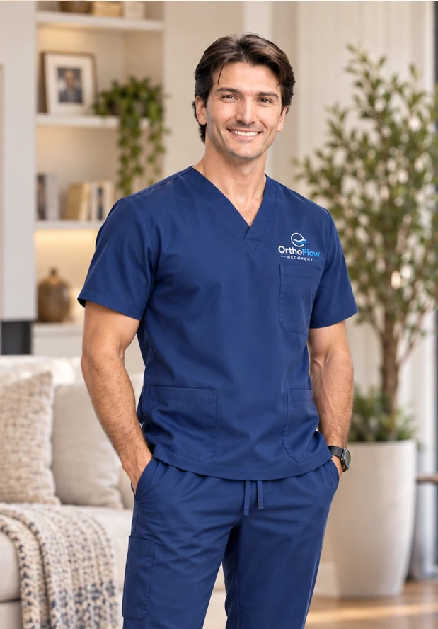

To improve patient outcomes by bringing thoughtful support, modern pain-management solutions, and a higher standard of service into the home.
To improve the standard of orthopedic care by giving patients access to modern therapies, dependable service, and hands-on guidance throughout recovery at home.
About Ortho Flow Recovery
OrthoFlow was founded after seeing how difficult the first days and weeks after orthopedic surgery can be, not only for patients, but also for the practices caring for them.
Patients often leave surgery facing pain, swelling, limited mobility, and uncertainty about what comes next. Traditional ice can be inconvenient and inconsistent, while purchasing advanced recovery equipment may be impractical. Even when better technology is available, arranging the equipment, learning how to use it, and managing its return can become another burden during an already demanding time.
We also saw the challenge from the practice's perspective. Surgeons and their staff want patients to feel supported after they leave the office, but they do not have the time or resources to coordinate equipment deliveries, answer every product question, or manage rental logistics.
OrthoFlow was created to help close that gap.
We provide advanced cold and compression equipment directly to the patient's home, set it up, explain how it works, and remain available throughout the rental. When the patient is finished, we coordinate the pickup as well. Our goal is to make the entire experience simple for the patient and require as little involvement as possible from the referring practice.

What we do differently
Advanced cold + compression therapy.
Ortho Flow provides cold and compression therapy that has been associated with significant reductions in postoperative opioid use in orthopedic studies. The NICE1 system gives patients access to modern recovery technology without relying on traditional ice-based methods.
White-glove service from start to finish.
From in-home delivery and setup to ongoing assistance throughout your rental, Ortho Flow provides responsive, personalized service every step of the way.
Recovery made easier at home.
We handle the logistics around the equipment so you don't have to. No pickup before surgery, no ice runs, no return shipping. Just delivery, support throughout your rental, and collection when you're finished.
What we stand for
Be reliable.
We do what we say we'll do and make every delivery, setup, and pickup as dependable as possible.
Be responsive.
Patients and practices should be able to reach a real person when they need support.
Make it simple.
We take the time to explain the equipment clearly and make sure every patient feels confident using it at home.
Stay involved.
Our service does not end at delivery. We stay connected throughout the recovery process and remain available when questions come up.
Talk to us before your procedure
Reserve your unit early and we'll work around your schedule.
Reserve Equipment